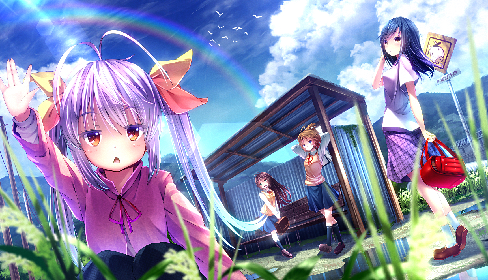

Asahigaoka might look like typical, boring countryside to most; however, no day in this village can ever be considered colorless thanks to five students of varying ages occupying the only class in the only school in town. The youngest student is first grader Renge Miyauchi, who brings an unadulterated wit, curiosity, and her characteristic catchphrase, "Nyanpasu!" Then there are the Koshigaya siblings consisting of the quiet ninth grader and elder brother Suguru, diminutive eighth grader Komari, and the mischievous seventh grader Natsumi. The recent arrival of Tokyo-raised fifth grader Hotaru Ichijou, who appears overdeveloped for her age and thus naturally holds an air of maturity, rounds out this lively and vibrant group of five classmates.
Based on the manga penned and illustrated by Atto, Non Non Biyori chronicles the not-so-normal daily lives of this group of friends as they engage in their own brand of fun and frolic, and playfully struggle with the realities of living in a rural area.

Beautiful grassy meadows. Individual shreds of grass matching the lustrous shine and dazzling color of emeralds. Flowers of majestic shades never seen before, adding a rainbow of colors to the field.

Glistering fog, chilly breeze, invigorous. Mountains in the distance that feel within reach, as if the heavens sit beyond. Quiet, peaceful, spiritful.
White blankets of angelic beauty. The same deep, dense river following across, now turned into a sparkling crystal like texture in the new light of the overwhelming sun that lit up the snow.
| Age | 11 | 14 | 13 | 7 |
| Birthday | May 28 | September 14 | January 24 | December 3 |
| Height | 161 cm | 130~140 cm | 156 cm | 134 cm |
| Blood type | O | AB | B | B |
| Favorite food | stew | sweet foods | ramen | curry |